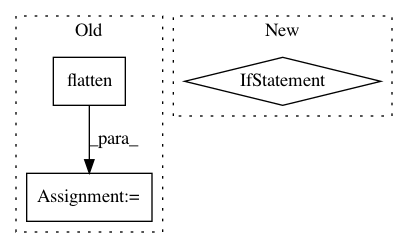

f4559a3d47510f776b3e38d5aceb07ee4b4b0ea9,gpflow/transforms.py,DiagMatrix,backward,#DiagMatrix#Any#,277
Before Change
def backward(self, y):
// Return diagonals of matrices
x = y.reshape(-1, self.dim, self.dim).diagonal(0, 1, 2).flatten()
return self._positive_transform.backward(x)
def forward_tensor(self, x):
y = self._positive_transform.forward_tensor(x)
After Change
def backward(self, y):
// Return diagonals of matrices
if not (y.shape[1] == y.shape[2] == self.dim) and (len(y.shape) == 3):
raise ValueError("shape of input does not match this transform")
return y.diagonal(offset=0, axis1=1, axis2=2).flatten()
def forward_tensor(self, x):
// create diagonal; matrices
In pattern: SUPERPATTERN
Frequency: 3
Non-data size: 3
Instances
Project Name: GPflow/GPflow
Commit Name: f4559a3d47510f776b3e38d5aceb07ee4b4b0ea9
Time: 2017-11-24
Author: james@prowler.io
File Name: gpflow/transforms.py
Class Name: DiagMatrix
Method Name: backward
Project Name: OpenMined/PySyft
Commit Name: 5efaf25f5499c7065f1c37bfd4288159714406d8
Time: 2020-08-12
Author: vova@promail.spb.ru
File Name: src/syft/lib/torch/uppercase_tensor.py
Class Name: TorchTensorWrapper
Method Name: _data_object2proto
Project Name: keras-team/autokeras
Commit Name: dd3469ee312513f2b8a1b2e4e90e8eb95a6f3bbb
Time: 2020-06-09
Author: jhfjhfj1@gmail.com
File Name: autokeras/utils/data_utils.py
Class Name:
Method Name: batch_dataset